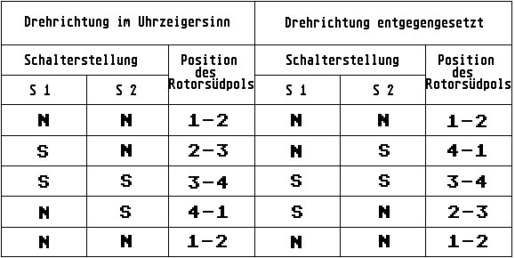

Previous
Next
TOC
Die verschiedenen Typen von Schrittmotoren
Es gibt zwei verschiedene Typen von Schrittmotoren, sie unterscheiden
sich nur in der Ansteuerung. Der unipolare Schrittmotor ist daran zu
erkennen, das er im Gegensatz zum bipolaren Motor 5 Anschlüsse hat
während der Bipolare mit 4 Anschlüssen auskommt. Der unipolare Motor
hat zwei Spulen die einen Mittelabgriff haben der bei den meisten
Typen auf 12 Volt gelegt werden muß. Die anderen zwei Anschlüsse
jeder Wicklung werden über Wechselschalter betätigt, wobei nur eine
Spulenhälfte Spannung bekommt. Wenn ein Wechselschalter betätigt wird
dreht sich der Schrittmotor ein Stück in eine Richtung, wieviel Grad
die Drehung beträgt hängt von dem internen Aufbau des Schrittmotors
ab. Es gibt Drehwinkel von 1.8 ,3.6, 7.5, 15 und 30 Grad, wobei die
15 Gradausführung am meisten verwendet werden und auch am billigsten
sind. Hier wird von diesem, im Gegensatz zu den Synchronmotoren aber
keine konstante Winkelgeschwindigkeit, sondern ein konstruktiv fest-
gelegter konstanter Winkel verlangt, sobald er mit einem digitalen
Signal angesteuert wird. Die Drehbewegung kommt dadurch zustande,
daß man den Statorspulen in geeigneter Reihenfolge Impulse zuführt.
Das kann entweder mit mechanischen Schaltern oder mit elektronischen
Kippschaltungen geschehen, die als Binärzähler geschaltet sind. Der
besseren Übersicht halber, wollen wir zunächst die Verhältnisse bei
mechanischer Ansteuerung betrachten. Sie erfolgt mit zwei einpoligen
Umschaltern mit denen vier binäre Informationen einstellbar sind.
Geht man davon aus, daß die beiden Schalter in der Stellung N stehen
so wird sich der Südpol des Rotors aus der abgebildeten Zeichnung in
eine Position bewegen, die zwischen 1 und 2 liegt. Er bleibt dort
solange stehen, bis der Schalter S1 in die Stellung S geschaltet
wird. In dem Moment bewegt sich der Rotorsüdpol in eine Position,
die zwischen 2 und 3 liegt. Wird anschließend der Schalter S2 in
Stellung S gebracht, so gelangt der Rotor in eine Stellung zwischen
Position 3 und 4. Ändert man die Reihenfolge der Schalterbewegungen,
indem man zum Beispiel zu Beginn anstelle des Schalters S1 den
Schalter S2 in Stellung S bringt, so gelangt der Südpol des Rotors
in eine Stellung zwischen Position 1 und 4. Damit kann die Drehrich-
tung umgekehrt werden. Die Rotorstellung in Abhängigkeit von den
Schalterstellungen geht aus der nachstehenden Tabelle hervor:

weiterblättern
Kapitel Die verschiedenen Typen von Schrittmotoren, Seite 1